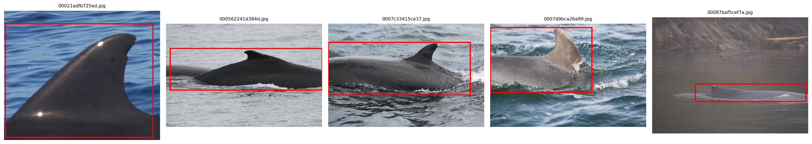

%config InlineBackend.figure_format = 'retina'
import os
from pyseter.extract import FeatureExtractor
from pyseter.sort import load_features
from pyseter.identify import predict_ids
import numpy as np
import pandas as pd
data_dir = '/Users/PattonP/datasets/happywhale/'Identifying animals with a reference set
In this notebook, we’ll demonstrate how do identify animals in a query set using a catalog of known individuals (i.e., a reference set). We’ll use the Happy Whale and Dolphin Kaggle competition dataset as an example. You can download the data by following that linked page (click the big “Download all” button). FYI, you’ll have to create an account first.
There are three components of the Happywhale dataset that we’ll focus on:
- train.csv .csv containing the IDs for every image in the reference set
- train_images Directory containing every image in the reference set
- test_images Directory containing every image in the query set
In this case, we’re treating the training dataset as the reference set, since we know the true identities.
Set up
Feel free to place the data anywhere you like, e.g., within a pyseter_jobs folder or something. I frequently come back to the Happywhale dataset, so I have it saved locally.
Extracting features using bounding boxes
Now that we’ve downloaded the data, we’ll get ready to extract the feature vectors by initializing the FeatureExtractor. Some of the images in the Happywhale dataset are pretty big, so we’ll set the batch_size to a low value, 4.
# we'll save the results in the feature_dir
feature_dir = data_dir + '/features'
os.makedirs(feature_dir, exist_ok=True)
# initialize the extractor
fe = FeatureExtractor(batch_size=4)Using device: mps (Apple Silicon GPU)
Warning
There are about 75,000 images in the Happywhale dataset. In my testing, on an NVIDIA GPU, it takes about 45 minutes to extract the features for the 50,000 reference images, and 25 minutes to extract the features for the 25,000 query images. On my Apple M4 MacBook, it takes about 3 hours and 30 minutes for the reference images and about 2 hours for the query images.
Additionally, we’ll need to supply bounding boxes to the feature extractor. Many of the Happywhale images are taken from far away, so we need to crop the image to just the animal. To do so, we’ll supply the path to the bounding box .csv as to the argument, bbox_csv. The .csv needs to have columns named: ['image', 'xmin', 'xmax', 'ymin', ymax'] that contain the image name and the coordinates for the corners of the box.

bbox_url = 'https://raw.githubusercontent.com/philpatton/pyseter/main/data/happywhale-charm-boxes.csv'
train_dir = data_dir + '/train_images'
train_features = fe.extract(image_dir=train_dir, bbox_csv=bbox_url)
# this saves the dictionary as an numpy file
out_path = feature_dir + '/train_features.npy'
np.save(out_path, train_features)
# now do the test images
test_dir = data_dir + '/test_images'
test_features = fe.extract(image_dir=test_dir, bbox_csv=bbox_url)
out_path = feature_dir + '/test_features.npy'
np.save(out_path, test_features)If you’ve already extracted the features, you can load them back into your session.
reference_path = feature_dir + '/train_features.npy'
reference_files, reference_features = load_features(reference_path)
query_path = feature_dir + '/test_features.npy'
query_files, query_features = load_features(query_path)Identifying animals
First, we’ll create two dictionaries. Dictionaries are similar to a named list in R, where we can access the value in the dictionary by providing it’s key. In this case, the key will be the image name and the value will be the feature vector for that image.
We’ll also need a DataFrame that tells us the identity of every individual in the reference set. This comes with the Kaggle dataset, in the train.csv file.
query_dict = dict(zip(query_files, query_features))
reference_dict = dict(zip(reference_files, reference_features))
id_df = pd.read_csv(data_dir + '/train.csv')
id_df.head()| image | species | individual_id | |
|---|---|---|---|
| 0 | 00021adfb725ed.jpg | melon_headed_whale | cadddb1636b9 |
| 1 | 000562241d384d.jpg | humpback_whale | 1a71fbb72250 |
| 2 | 0007c33415ce37.jpg | false_killer_whale | 60008f293a2b |
| 3 | 0007d9bca26a99.jpg | bottlenose_dolphin | 4b00fe572063 |
| 4 | 00087baf5cef7a.jpg | humpback_whale | 8e5253662392 |
And now we’re ready to make predictions! By default, predict_ids returns 10 proposed IDs. Here we’ll show just 2 so for the sake of variety.
prediction_df = predict_ids(reference_dict, query_dict, id_df, proposed_id_count=2)
prediction_df.head(20)| image | rank | predicted_id | score | |
|---|---|---|---|---|
| 0 | a704da09e32dc3.jpg | 1 | 5f2296c18e26 | 0.500233 |
| 1 | a704da09e32dc3.jpg | 2 | new_individual | 0.500000 |
| 2 | de1569496d42f4.jpg | 1 | ed237f7c2165 | 0.826259 |
| 3 | de1569496d42f4.jpg | 2 | new_individual | 0.500000 |
| 4 | 4ab51dd663dd29.jpg | 1 | b9b24be2d5ae | 0.680653 |
| 5 | 4ab51dd663dd29.jpg | 2 | 31f748b822f4 | 0.503390 |
| 6 | da27c3f9f96504.jpg | 1 | c02b7ad6faa0 | 0.937102 |
| 7 | da27c3f9f96504.jpg | 2 | new_individual | 0.500000 |
| 8 | 0df089463bfd6b.jpg | 1 | f7b322faeeb5 | 0.538287 |
| 9 | 0df089463bfd6b.jpg | 2 | ae9cca8f13ca | 0.504653 |
| 10 | 813892efb592e0.jpg | 1 | c22d65f2d2f0 | 0.808234 |
| 11 | 813892efb592e0.jpg | 2 | new_individual | 0.500000 |
| 12 | 0c9304ddd0ba35.jpg | 1 | 2df99dc71d85 | 0.852067 |
| 13 | 0c9304ddd0ba35.jpg | 2 | new_individual | 0.500000 |
| 14 | 14718a369776c5.jpg | 1 | e8d3c0ff0951 | 0.800375 |
| 15 | 14718a369776c5.jpg | 2 | new_individual | 0.500000 |
| 16 | 65653992318202.jpg | 1 | c4e546efa5ca | 0.842364 |
| 17 | 65653992318202.jpg | 2 | new_individual | 0.500000 |
| 18 | 9857340b9e8c8e.jpg | 1 | 1a20c92ffe68 | 0.813362 |
| 19 | 9857340b9e8c8e.jpg | 2 | new_individual | 0.500000 |
By default, predict_ids inserts a dummy prediction “new_individual” at 0.5. This makes it easy to evaluate the algorithm with metrics like MAP@5, or calculate the false negative rate.
You can save the results with to_csv from pandas.
prediction_df.to_csv('predicted_ids.csv', index=False)